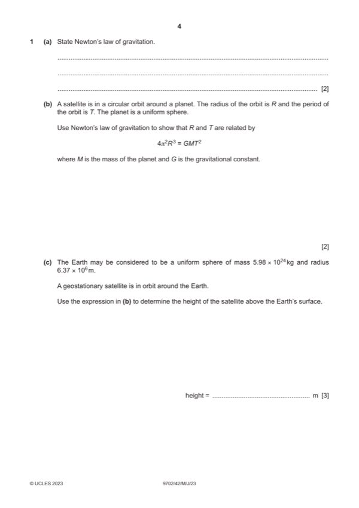

Question 1

Original paper page 4
Part 1(a) — solution
- [B1] Obtain/use: (gravitational) force is (directly) proportional to product of masses
- [B1] Obtain/use: force (between point masses) is inversely proportional to the square of their separation
Mark points
- [B1] Obtain/use: (gravitational) force is (directly) proportional to product of masses
- [B1] Obtain/use: force (between point masses) is inversely proportional to the square of their separation
Part 1(b) — solution
- [M1] Obtain/use: GMm / R2 = mR2
- [A1] Obtain/use: = 2 / T and algebra leading to 42R3 = GMT2
- [M1] Obtain/use: GMm / R2 = mv2 / R (
- [A1] Obtain/use: v = 2R / T and algebra leading to 42R3 = GMT2 (
Mark points
- [M1] Obtain/use: GMm / R2 = mR2
- [A1] Obtain/use: = 2 / T and algebra leading to 42R3 = GMT2
- [M1] Obtain/use: GMm / R2 = mv2 / R (
- [A1] Obtain/use: v = 2R / T and algebra leading to 42R3 = GMT2 (
Part 1(c) — solution
- [A1] Obtain/use: h = (4.22 107) – (6.37 106)
Mark points
- [A1] Obtain/use: h = (4.22 107) – (6.37 106)
Part 1(d)(i) — solution
- [A1] Obtain/use: = 2 / (24 60 60)
Mark points
- [A1] Obtain/use: = 2 / (24 60 60)
Part 1(d)(ii) — solution
- [B1] Obtain/use: orbit is from east to west
- [B1] Obtain/use: orbit is not equatorial / orbit is polar
Mark points
- [B1] Obtain/use: orbit is from east to west
- [B1] Obtain/use: orbit is not equatorial / orbit is polar